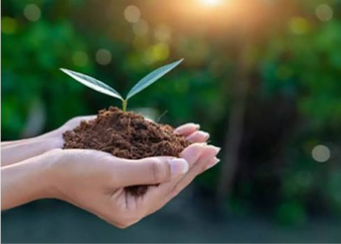

¿Por qué es importante cuidar el ambiente?
El cuidado del ambiente es muy importante para todos, porque vivimos en el mismo planeta. Hoy en día hay problemas como la contaminación, el cambio climático y la basura. Por eso es importante cuidar la naturaleza y usar los recursos de manera responsable para tener un lugar mejor donde vivir.

Acciones cotidianas y simples
Cuidar el ambiente es algo que todos podemos hacer desde nuestra casa o la escuela.
Podemos realizar acciones simples como separar la basura, reciclar, ahorrar agua y apagar las luces cuando no las necesitamos.
También podemos evitar usar tanto plástico y reutilizar las cosas antes de tirarlas.
Es fundamental cuidar los árboles, las plantas y los animales, y no tirar basura en lugares donde no corresponde.
Caminar, andar en bicicleta o usar el transporte público también ayuda a disminuir la contaminación.

Si todos hacemos un poco, podemos lograr un cambio importante. Aunque algunas acciones parezcan pequeñas, ayudan a cuidar nuestro planeta y a tener un ambiente más limpio para todos.